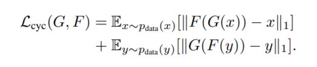

CycleGAN
논문 링크 : Unpaired Image-to-Image Translation using Cycle-Consistent Adversarial Networks
Introduction
- pix2pix의 한계점
pix2pix에서는 training data가 pair로 존재해야 한다는 한계가 있다. 이런 한계를 극복하기 위해 본 논문에서는 paired data없이 X라는 domain에서 얻은 이미지를 target domain Y로 바꾸는 CycleGAN을 제시한다.
Method

CycleGAN의 구조를 단순화하면 위 그림과 같다. X와 Y는 서로 연결하고자 하는 서로 다른 domain의 image이며, X에서 Y로 mapping하는 G function이 존재하며 그 결과를 Y의 Discriminator인 Dy를 통해 판별한다. 반대의 경우도 마찬가지이다.
하지만 이런 방법의 경우 문제가 발생하는데, X에서 Y로 mapping 하는 경우 X의 성질을 유지하면서 style을 Y로 바꾸는 것이 아니라, 단순히 domain Y의 image처럼 보이기만 하면 되기 때문에 본래 목적대로의 mapping이 이루어지지 않는다.
위에서 언급한 문제를 해결하기 위해, 위 그림처럼 추가적인 loss를 사용한다. X에서 Y로의 단순 mapping이 아니라, Y에서 X로 다시 복구 가능할 수 있도록 제약조건을 추가하는 것이다.
- Full Loss Function
CycleGAN 에서의 전체 Loss는 위 식과 같다. 각각의 loss를 하나씩 살펴보도록 하겠다.
- Adversarial Loss
일반적인 GAN 에서의 Adversarial Loss는 주로 BCE Loss를 사용하지만, 본 논문에서는 Least Square Loss를 사용한다.이렇게 학습을 진행했을 때 안정적인 학습이 가능하고, mode collapse나 vanishing gradient의 가능성을 줄여준다고 한다.
Generator는 pix2pix에서의 U-Net 구조를 기반으로 ResNet 구조를 가져와 128x128 이하의 image에는 6개의 resblock을, 256x256 이상의 image에는 9개의 resblock을 사용하였다.
Discriminator는 pix2pix의 70x70 PatchGAN을 사용하였다.
- Cycle Consistency Loss
Cycle Consistency Loss는 위에서 언급한 Y에서 X로 복구 가능하기 위한 제약조건으로의 Loss이다. paired data의 경우 X와 Y의 좌표값을 통해 그 관계에 대한 정보를 얻을 수 있지만,
unpaired dataset의 경우 그 정보가 없기 때문에 만들어진 image가 실제와 pair 관계라고 확정할 수 없기 때문에 한 방향의 mapping이 아닌 돌아오는 mapping까지 고려하는 것이다.
위 그림처럼 Input X와 Reconstruction F(G(X))의 차이를 줄이는 것이 목적이다.
- Identity Loss
본 논문의 저자들은 추가적으로 사진<->그림 변환 등의 task에서 identity loss를 제안한다. X에서 Y로 가는 mapping 이외에도 Y에서 Y로 가는 mapping또한 제약을 걸어주는 것이다.
그 결과로 아래의 사진처럼 분위기나 색상을 잘 유지할 수 있게 해주는 역할을 한다.
CycleGAN의 한계
CycleGAN은 분위기나 색상을 바꾸는 것으로 스타일을 학습하기 때문에 피사체의 모양 자체는 바꿀 수 없다는 한계가 존재한다.